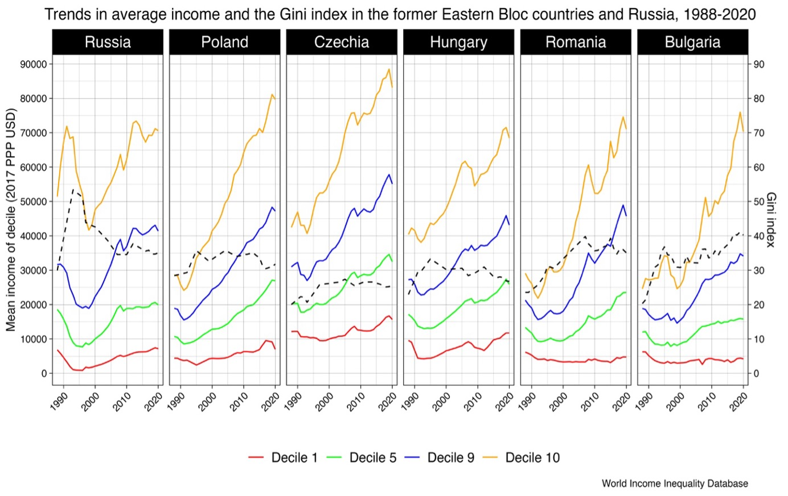
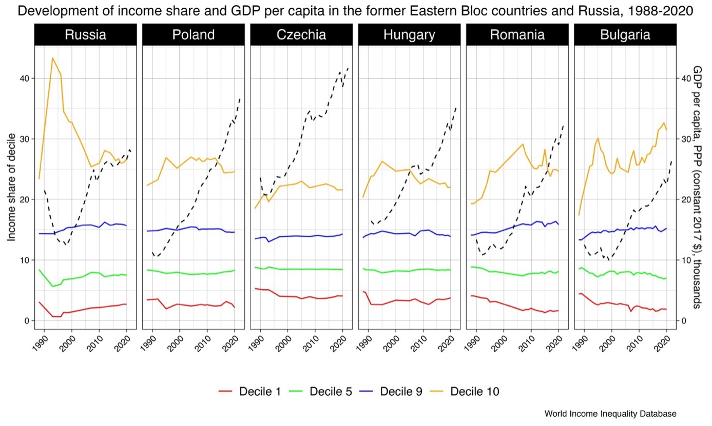
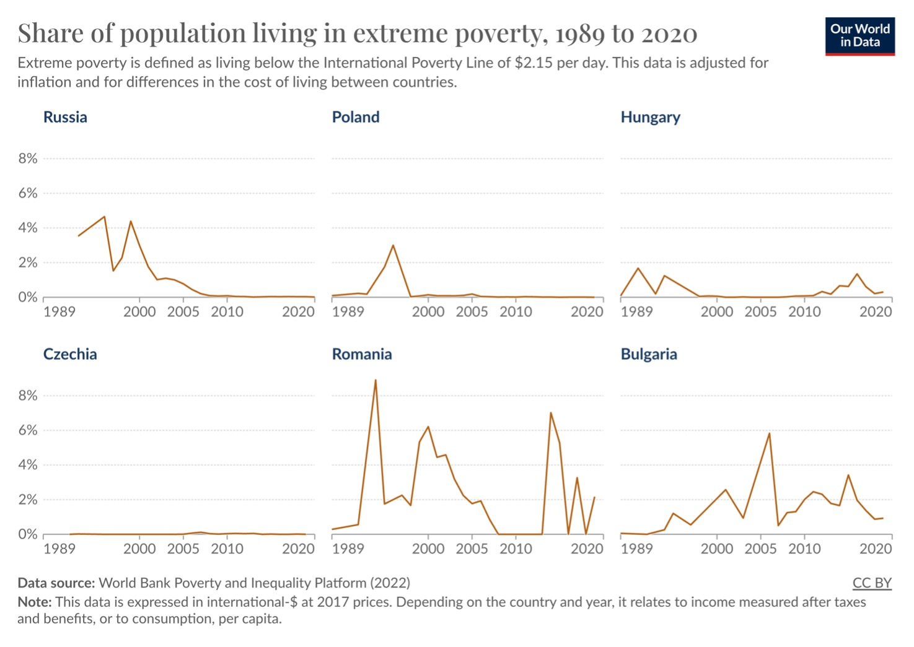

Johdanto
Berliinin muurin murtuminen vuonna 1989 ja Neuvostoliiton romahtaminen vuonna 1991 johti itäblokin maiden (uudelleen)itsenäistymisiin. Sitä seuranneet vuodet merkitsivät käännekohtaa, kun maat siirtyivät keskitetystä suunnitelmataloudesta markkinatalouteen. Maiden talouksia, joita rasittivat vanhentuneet teolliset rakenteet, vaativat radikaalia uudistusta, joten hallitukset aloittivat toimenpiteitä nopeuttaakseen siirtymää, käytäntöä, jota nimitettiin myös “shokkiterapiaksi”. Siirtymätalouksissa tulonsiirtoja lakkautettiin, hintasäännöstelyä vapautettiin, palkankorotuksia jäädytettiin, valtion investointeja vähennettiin ja veroja nostettiin. Myös aiemmin valtion holhouksessa olleet teollisuudenalat joutuivat markkinavoimien kouriin. Shokkiterapian vaikutukset olivat nopeita: työttömyys kasvoi ja kilpailukyvyttömät yritykset romahtivat. Vaikutukset heijastuivat koko yhteiskuntaan. Valtion tarjoamat sosiaaliset turvaverkot, joihin monet olivat luottaneet, romahtivat, joka synnytti kansalaisissa epävarmuutta ja ahdistusta. Tämä ajanjakso ei muuttanut ainoastaan maiden taloutta vaan myös yhteiskuntaa. Uusi järjestelmä loi uusia mahdollisuuksia haastaen samalla vakiintuneet normit. Edistyksen lupausten keskellä oli kuitenkin eriarvoisuuden ja epäluottamuksen varjoja, jotka loivat pohjan 2000-luvun yhteiskunnalliselle kehitykselle. Monet lopulta kokivat, että shokkiterapiassa oli ollut liikaa shokkia ja liian vähän terapiaa.
Tässä esseessä tarkastelen Venäjän ja itäblokin maiden eriarvoisuuskehitystä ja köyhyyttä vuosien 1989–2020 välillä vertaillen niitä keskenään. Aineistona käytän World Income Inequality Databasen dataa ja erinomaisesta Our World in Data -sivustolta löytyvää aineistoa. Lisäksi olen käyttänyt analysoinnin tukena Euroopan jälleenrakennus- ja kehityspankki (EBRD) vuosittain ilmestyvää siirtymätalouksien raportteja.
Eriarvoisuus Venäjällä ja entisissä itäblokin maissa
Venäjällä, entisissä itäblokin maissa ja monissa muissakin entisen Neuvostoliiton alueilla eriarvoisuus lisääntyi voimakkaasti siirtymäkauden ensimmäisen vuosikymmenen aikana. Talouskasvu oli hidasta ensimmäisten vuosien aikana, minkä seurauksena keskimääräiset tulot jäivät paljon alle siirtymävaihetta edeltäneen tason. Esimerkiksi Venäjällä, ennen Neuvostoliiton romahdusta, ainoastaan suurituloisin kymmenes pystyi radikaalisti kasvattamaan tulojaan, mutta Neuvostoliiton romahduksen jälkeen ja siirtymävaiheen aikana tulojen romahdus oli sitäkin suurempi. Jokaisessa maassa ja jokaisessa tulodesiilissä ihmisten tulot romahtivat katastrofaalisesti, erityisesti mitä pienituloisempaan joukkoon kuului. Kuten kuvasta 1 voimme nähdä, Venäjällä vuosien 1988–1996 välillä viidennen tulodesiilin keskimääräiset tulot tippuivat noin 60 % ja kaikkein pienituloisimmilla jopa lähes 90 %.

Kuvasta 1 voimme myös havaita, että siirtymävaiheen vaikutukset olivat yleisesti samankaltaisia kaikissa maissa, vaikka entisissä itäblokin maissa keskimääräisten tulojen lasku ei ollut aivan yhtä dramaattinen kuin Venäjällä. Silti jokaisen tulodesiilin keskimääräiset tulot enemmän tai vähemmän romahtivat. Bulgariassa talouden radikaali uudistus aloitettiin muita maita myöhemmin. Siellä suurituloisin kymmenys kasvatti tulotasoaan 1990-luvun ensimmäisellä puoliskolla, mutta vuonna 1996, kun talousuudistukset alkoivat, myös kaikkein suurituloisimman väestönosan tulot romahtivat. Kun siirtymävaiheen uudistukset olivat jonkin aikaa vaikuttaneet, useat maat pystyivät kasvattamaan keskimääräisiä tulotasojaan jokaisella desiilitasolla. Ainoastaan Romaniassa ja Bulgariassa köyhimmän tulodesiilin tulot jämähtivät paikoilleen, ja tämä on kasvattanut maiden tuloeroja jo vuosia.
Gini-indeksillä mitattuna (kuva 1: musta katkoviiva) eriarvoisuuden kehitys on myös samankaltainen jokaisessa siirtymävaiheen maissa. Jokaisessa maassa eriarvoisuus lähti välittömästi kasvuun, vaikkakin suhteellisia eroja löytyy. Esimerkiksi Venäjällä tuloerot kasvoivat räjähdysmäisesti. Ennen siirtymävaihetta Venäjän Gini-kerroin oli noin 30 %, mutta kasvoivat Neuvostoliiton romahduksen jälkeen siirtymävaiheessa suurimmilleen 53 prosenttiin vuonna 1993. Tämän jälkeen taloudellinen eriarvoisuus tippui jyrkästi vuoteen 2007 saakka, jolloin ne stabilisoituivat melko korkealle tasolle, noin 35 %:iin.
Entisissä itäblokin maissa taloudellinen eriarvoisuus myös kasvoi, mutta Puolassa, Tšekissä ja Unkarissa maltillisemmin kuin Romaniassa ja Bulgariassa. Näissä niin sanotuissa Visegrad-maissa eriarvoisuus on siirtymävaiheen jälkeen stabiloitunut tai lähtenyt jopa laskuun. Kuten kuvasta 2 voimme nähdä jokaisessa maassa kaikista suurituloisin kymmenys kasvattivat suhteellista osuuttaan muihin tulodesiileihin verrattuna. Venäjällä rikkain kymmenes kasvattivat suhteellista osuuttaan siirtymävaiheen alussa, kunnes heidän osuus romahti lähes 20 %-yksiköllä. Romaniassa siirtymävaiheen uudistukset johtivat rikkaimman kymmenyksen osuuden kasvamiseen jopa pitkälle 2000-luvun lopulle saakka, kunnes nousu pysähtyi ja eriarvoisuus kääntyi laskuun. Bulgariassa rikkain kymmenes on kasvattanut suhteellista osuuttaan taloudesta 2000-luvun puolivälistä saakka ja taloudellinen eriarvoisuus on jatkanut kasvuaan näihin vuosiin saakka. Romaniassa ja Bulgariassa alimmat desiilit ovat menettänyt suhteellista osuuttaan taloudesta rikkaimpien kustannuksella, joka on kasvattanut maissa eriarvoisuutta.

Kuten kuvasta 2 voimme havaita, talous koki valtavan kolauksen, kun maat siirtyivät kommunistisesta talousjärjestelmästä kapitalismiin. Venäjällä asukaskohtainen bruttokansantuote suorastaan romahti (kuva 2: musta katkoviiva). Mielenkiintoista on, että Puolassa ja Unkarissa bruttokansantuotteella mitattuna siirtymävaiheen vaikutus oli maltillinen, kun Bulgariassa, Romaniassa ja erityisesti Venäjällä se oli pitkäaikainen ja syvä. Joka tapauksessa uudistusten myötä bruttokansantuote lähti ennemmin tai myöhemmin nopeaan nousuun: Puolassa, Unkarissa ja Tšekeissä nopeammin kuin muissa maissa. Euroopan jälleenrakennus- ja kehityspankin (ERDB) raporttien mukaan nämä olivatkin maita, jotka olivat uudistusohjelmien parhaita suorittajia, joissa mitattiin liberalisaation, yksityistämisen, yritysten, infrastruktuurin, finanssi-instituutioiden ja oikeudellisen ympäristön tilaa. Muutosohjelmien hyvä toteuttaminen herätti luottoa myös kansainvälisesti. Teollisuuden tuotanto ja tuottavuus sekä ulkomaiset investoinnit kasvoivat muita siirtymämaita nopeammin, jotka mahdollistivat kestävämmän talouskasvun.
Verotuksella on suuri vaikutus maiden Gini-indeksiin, kuten voimme havaita kuvasta 31. Näemme, että verojen ja etuuksien jälkeen eriarvoisuus vähenee huomattavasti. Kuitenkin maiden hallitusten verojen ja etuuksien avulla toteuttaman uudelleenjaon laajuudessa on suuria eroja. Bulgariassa ja Venäjällä verojen vaikutus laskee Gini-indeksiä noin 25 %. Romaniassa veron vaikutus jää noin 33 prosenttiin. Tšekeissä, Unkarissa, Puolassa verot pienentävät Gini-indeksiä jopa noin 40 %.

Köyhyys
Negatiivinen yhdistelmä keskimääräisten tulojen laskua ja eriarvoisuuden kasvua johti kotitalouksien köyhyyden dramaattiseen lisääntymiseen. Kuten kuvasta 4 voimme nähdä, ihmisiä putosi jopa äärimmäiseen köyhyyteen (alle 2,15 $) siirtymävaiheen aikana. Suhteellisesti kaikista dramaattisin köyhyyden lisääntyminen tapahtui Romaniassa, jossa jopa 8 % väestöstä eli äärimmäisessä köyhyydessä 1990-luvun alussa. Bulgariassa, ja ajoittain Romaniassakin, äärimmäinen köyhyys on ollut pysyvä asiaintila 1990-luvulta saakka. Kuten saatamme havaita ainoastaan Tšekeissä äärimmäistä köyhyyttä ei juurikaan esiintynyt. Joka tapauksessa siirtymävaihe oli dramaattinen muutos ihmisten elämään. Venäjällä tämä tarkoitti pahimmillaan sitä, että lähes seitsemän miljoonaa ihmistä, Romaniassa kaksi miljoonaa ja Puolassa miljoona ihmistä eli äärimmäisessä köyhyydessä; todellisuudessa, jolle on ominaista ihmisten perustarpeiden, kuten ruoan, puhtaan juomaveden, sanitaation, terveydenhuollon, suojan, koulutuksen ja tiedon puute.

Jos mahdollista, tilanne oli vieläkin karumpi, jos tarkastelemme Maailmanpankin alemman keskitulotason maihin käytettyä köyhyyden raja-arvoa, joka on 3,65 dollaria päivässä. Kun otan kynnykseksi vuoden 1995, jolloin kaikki tarkastelussa olevat maat luokiteltiin alemman keskitulotason maiksi, niin tällöin Maailmanpankin datan mukaan Venäjällä pahimmillaan yli 15 %, Puolassa yli 20 % ja Romaniassa jopa lähes puolet väestöstä eli alle 3,85 $ päivässä. Vuoteen 2005 tultaessa kaikki maat olivat nousseet ylemmän keskitulotason maiksi, mutta monessa maassa köyhyys oli alati läsnä.
Lopuksi
On selvää, etteivät ihmisten toiveet markkinatalouden auvoisuudesta eivät käyneet kaikilla toteen. Ne ihmiset, jotka odottivat laajaa tavaroiden saatavuutta ja taloudellista turvallisuutta, valitettavasti kohtasivat todellisen köyhyyden ja valtavat eriarvoisuuden muodot ensimmäistä kertaa elämässään. Ne, jotka kamppailivat perustarpeiden, kuten ruoan, asumisen ja terveydenhuollon kanssa, kuuluivat yleensä niihin yhteiskunnan osiin, jotka eivät ole hyötyneet 1990-luvun taloudellisista ja poliittisista muutoksista. Monet ihmiset vertasivat nykyisyyttä menneeseen ja joutuivat pettymään. Kun aikaisemmin sosialistinen järjestelmä korvasi alhaiset tulot sosiaalisilla turvaverkoilla, jotka tarjosivat ilmaista koulutusta, pääsyn kulttuuritapahtumiin ja sairaanhoitoa, niin sitä ei enää ollutkaan saatavilla samalla tavalla. Aikakauden seuraukset ovat syvällisiä. Vaikka talouden uudistaminen oli välttämätöntä edistyksen kannalta, se ei tullut ilman hintaa. Se jätti pysyviä jälkiä maan sosiaaliseen, taloudelliseen ja kulttuuriseen identiteettiin, jotka näkyvät monessa siirtymätalouden maassa tänäkin päivänä.
Lähteet
European Bank for Reconstruction and Development (2000). Transition report 2000 - Employment, skills and transition. https://www.ebrd.com/publications/transition-report-2000-english.pdf
Our World in Data. Poverty. https://ourworldindata.org/search?q=poverty
World Income Inequality Database. https://www.wider.unu.edu/database/world-income-inequality-database-wiid#WIIDcomp
Footnotes Tiedot on haettu Our World in Data -sivustolta.↩︎
Our World in Data.↩︎
Footnotes
Joe Hasell, Pablo Arriagada, Esteban Ortiz-Ospina and Max Roser (2023) - “Economic Inequality” Published online at OurWorldInData.org. Retrieved from: ’https://ourworldindata.org/economic-inequality’ [Online Resource]↩︎